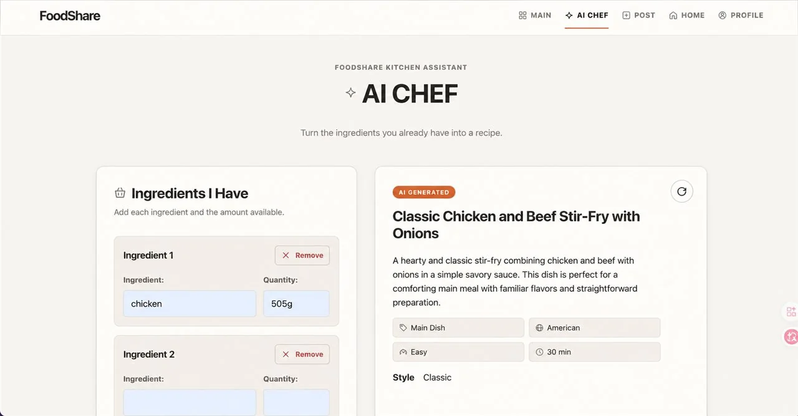
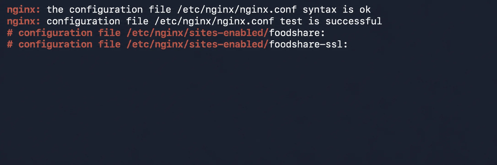
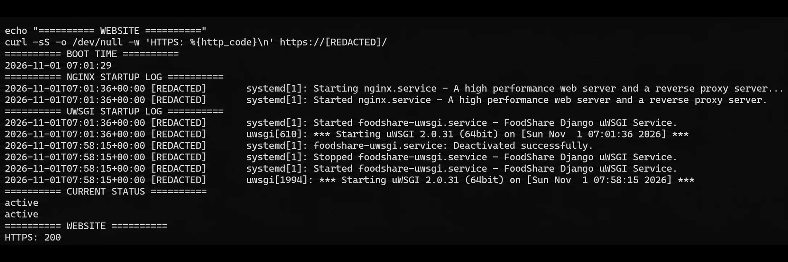

Background and goal
FoodShare was designed as a complete content community rather than a static recipe catalogue. Users can discover recipes, publish and manage content, interact with other cooks, and use AI Chef to turn available ingredients into a draft recipe. The engineering goal was to connect user experience, permissions, APIs, persistence, testing, and production deployment.
My contribution and team outcome
My contribution
- Contributed to recipe discovery, publishing, profile, and community-interaction flows.
- Implemented search, multi-filtering, pagination, and AJAX updates using Supabase-backed data.
- Worked on registration, login, profile, recipe draft, and publishing behaviour.
- Implemented and verified authorisation boundaries for owners and staff across recipes, comments, and administration.
- Helped test REST API behaviour and deploy the application to AWS EC2.
Delivered by the team
- Complete Django content platform and shared data model.
- AI Chef ingredient-to-recipe experience.
- Recipe, comment, like, save, and profile interactions.
- Cross-feature integration, testing, and documentation.
Technology stack
Core capabilities
- Registration, login, profile management, and role-aware administration.
- Recipe drafts, publishing, editing, deletion, and ownership checks.
- Search, multiple filters, pagination, likes, saves, and comments.
- REST endpoints for core content behaviour and frontend integration.
- AI Chef recipe generation from user-provided ingredients.
- HTTPS deployment with reverse proxying, application service management, and restart recovery.
System architecture
Nginx terminates HTTPS and forwards application traffic to uWSGI; systemd supervises the application service.
Technical challenges and solutions
Permissions had to match content ownership
Write operations check authentication, owner identity, and staff privileges so users cannot edit or delete another user’s recipe or comment.
Discovery needed responsive filtering
Search, filters, pagination, and AJAX updates were composed so users could refine results without rebuilding the entire page flow.
Development success did not guarantee production delivery
The team deployed behind Nginx and uWSGI, configured HTTPS and systemd, and verified redirects, HTTPS 200 responses, service startup, and recovery.
Deployment evidence


